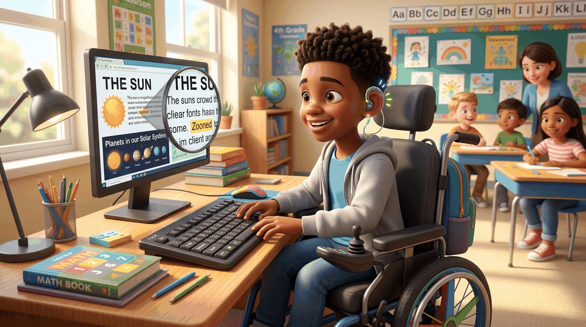

الموديول الثاني: أنظمة التشغيل والتكنولوجيا المساعدة
نظام التشغيل هو البرنامج الرئيسي والوسيط الذي يدير جهاز الكمبيوتر ويتحكم في جميع مكوناته المادية (Hardware) والبرمجية (Software). وبدونه لا يمكن لجهاز الحاسب أن يعمل إطلاقاً! ومن أشهر أنظمة التشغيل: نظام Windows للكمبيوتر، وأنظمة Android و iOS للهواتف الذكية.

تُعد وحدة المعالجة المركزية بمثابة «عقل ومخ الكمبيوتر»، وهي المسؤولة عن معالجة البيانات وإجراء كافة العمليات الحسابية والمنطقية المعقدة لتحويلها إلى معلومات جاهزة للعرض.
- المستخدم يدخل البيانات (مثل كتابة 2 + 2 على لوحة المفاتيح).
- يقوم نظام التشغيل (OS) باستقبالها وإرسالها فوراً إلى وحدة المعالجة المركزية (CPU).
- تقوم الـ CPU بمعالجة البيانات وإجراء عملية الجمع واستخراج النتيجة (4).
- ترسل الـ CPU النتيجة إلى نظام التشغيل، الذي يقوم بدوره بعرضها للمستخدم على شاشة العرض.
تخيل الكمبيوتر زي مطعم كبير: أنت (الزبون) بتطلب الأكل.. نظام التشغيل هو (الجرسون) الشاطر اللي بياخد طلبك يوصله للمطبخ.. والـ CPU هي (الشيف العبقري) اللي بيطبخ ويجهز الوجبة.. وبعدين الجرسون يجيبلك الطبق جاهز وشهي!
هي أجهزة وبرمجيات وأدوات تكنولوجية متطورة صُممت خصيصاً لمساعدة الأشخاص ذوي الهمم على ممارسة حياتهم اليومية، والتعلم، والعمل، والتواصل باستقلالية وأمان تام دون الاعتماد الدائم على الآخرين.

| الأداة المساعدة | الفئة المستفيدة | الدور والأهمية |
|---|---|---|
| برمجيات تكبير الشاشة (Screen Magnifiers) | ضعاف البصر | تكبير الكلمات والصور والأيقونات على الشاشة ليتمكن ضعاف البصر من قراءتها بسهولة. |
| سماعات الأذن الطبية الحديثة | ضعاف السمع | تضخيم الأصوات ويمكن توصيلها لاسلكياً عبر البلوتوث بالهواتف المحمولة وتطبيقاتها. |
| الكراسي المتحركة الآلية (Motorized Wheelchairs) | أصحاب الهمم الحركية | تمنح الحركة المستقلة، واستخدمها عالم الفيزياء العبقري «ستيفن هوكينج». |
| برمجيات التواصل البديل | غير القادرين على التحدث | تحويل النصوص والصور إلى جمل صوتية منطوقة للتعبير عن متطلباتهم. |
| الأدوات الرياضية المساعدة | المكفوفين والرياضيين | كرات تصدر أصواتاً عند التدحرج لممارسة ألعاب كرة القدم الخاصة بالمكفوفين. |
التكنولوجيا مش مجرد ألعاب ومسلسلات.. التكنولوجيا المساعدة هي «إيد ورجل وعين» لأصحاب الهمم، بتخليهم علماء وأبطال رياضيين ويشاركوا في كل مجالات الحياة زينا وأحسن كمان!
( أ- Windows | ب- Excel | جـ- PowerPoint | د- Word )
( أ- طباعة الأوراق | ب- إدخال الصوت | جـ- معالجة البيانات | د- توصيل الشاحن )
( أ- ضعف السمع | ب- ضعف البصر | جـ- صعوبة الحركة | د- فقدان النطق )
( أ- كرسياً متحركاً آلياً مزوداً بنظام صوتي | ب- طابعة ليزر | جـ- كاميرا رقمية | د- ماسحاً ضوئياً )
( أ- الطابعة | ب- نظام التشغيل | جـ- الشاحن | د- الفلاشة )
( أ- أدوات رياضية مساعدة | ب- لوحة المفاتيح | جـ- برامج الرسم | د- أجهزة مسح المستندات )
الإجابة: ................................................................................................................................................................................
الإجابة: ................................................................................................................................................................................
الإجابة: ................................................................................................................................................................................
1- نظام التشغيل (Operating System - OS) (لأنه يدير كل البرامج والأجهزة ويعتبر الوسيط الأساسي).
2- وحدة المعالجة المركزية (CPU) (لأنها تعالج البيانات وتتحكم في العمليات الحسابية والمنطقية).
3- التكنولوجيا المساعدة (Assistive Technology) (مصممة لتمكين ذوي الهمم وتسهيل حياتهم).
4- برمجيات تكبير الشاشة (Screen Magnification) (تكبر الكلمات والصور لضعاف البصر).
5- سماعات الأذن الطبية (Hearing Aids) (تضخم موجات الصوت وتتصل بالبلوتوث).
(1) أ- Windows | نظام التشغيل الأكثر انتشاراً للحواسيب، بينما الباقي برامج تطبيقية عادية.
(2) جـ- معالجة البيانات | لأن الـ CPU مسؤولة عن التفكير وحل المعادلات وترتيب البيانات.
(3) ب- ضعف البصر | لتكبير حجم النصوص وتسهيل قراءتها.
(4) أ- كرسياً متحركاً آلياً مزوداً بنظام صوتي | ساعده على التغلب على الشلل ومواصلة أبحاثه الفضائية.
(5) ب- نظام التشغيل | لأن نظام التشغيل هو حلقة الوصل المباشرة مع المعالج.
(6) أ- أدوات رياضية مساعدة | تمكن المكفوفين من سماع مكان الكرة وتتبعها بالصوت.
(1) ( ✗ ) خطأ. التصويب: لا يمكن للكمبيوتر أن يعمل إطلاقاً بدون نظام تشغيل.
(2) ( ✗ ) خطأ. التصويب: تشمل كل فئات ذوي الهمم (ضعاف السمع، ضعف البصر، صعوبات الحركة، وفاقدي النطق).
(3) ( ✓ ) صواب. هي المسؤولة عن معالجة البيانات الرقمية وتحويلها لمعلومات مفيدة.
(4) ( ✓ ) صواب. تتيح لضعاف السمع استقبال المكالمات والأصوات مباشرة من الموبايل.
(5) ( ✗ ) خطأ. التصويب: طريقة برايل هي التي تعرض نقاطاً بارزة، أما برمجيات تكبير الشاشة فتكبر الحجم بصرياً.
السؤال الرابع: (1) نظام التشغيل (OS) | (2) الكراسي المتحركة الآلية | (3) وحدة المعالجة المركزية (CPU).
السؤال الخامس (علل):
(1) لأنه بمثابة المدير والوسيط الذي يتحكم في مكونات الحاسب ويسمح للمستخدم بتشغيل التطبيقات والبرامج المختلفة.
(2) لأنها تتولى التفكير والمعالجة لجميع البيانات وإجراء العمليات الحسابية والمنطقية وإعطاء الأوامر لكل أجزاء الحاسب.
السؤال السادس (ماذا يحدث إذا):
(1) يتجمد الكمبيوتر ويتوقف فوراً عن العمل ولن يستطيع معالجة أي أمر أو إظهار أي معلومة على الشاشة.